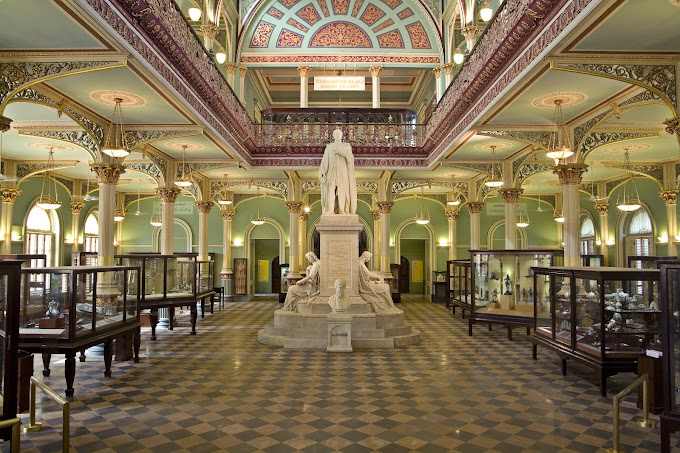
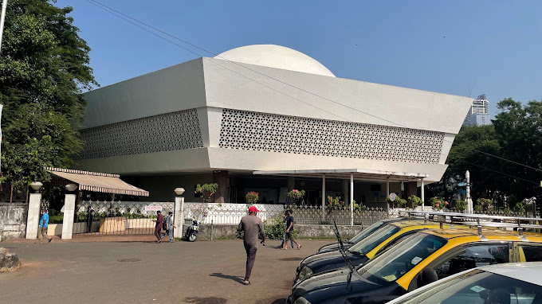

Dr. Bhau Daji Lad Museum is the oldest museum in Mumbai. Situated in the vicinity of Byculla Zoo, Byculla East, it was originally established in 1855 as a treasure house of the decorative and industrial arts, and was later renamed in honour of Bhau Daji Lad
★★★★☆

Nehru Science Center
Worli, Mumbai
The centre is named after India's first Prime Minister, Jawaharlal Nehru. In 1977, the centre started with the 'Light and Sight' exhibition, and then in 1979 a Science Park was built
★★★☆☆

Mumbai Zoo
Byculla, Mumbai
Jijamata Udyaan, also known as the Byculla Zoo and formerly Victoria Gardens, is a zoo and garden covering 50 acres located at Byculla, in the heart of Mumbai, India.